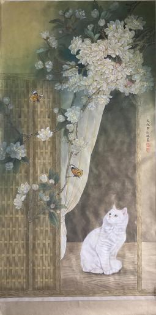
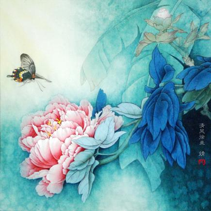

工笔画，亦称“细笔画”，属中国画技法类别的一种。工笔画与“写意画”对称。工笔画属于工整细致一类画法，如宋代的院体画，明代仇英的人物画等。 工笔画要求“有巧密而精细者”（北宋韩拙《山水纯全集》），水墨、浅绛、青绿、金碧、界画等艺术形式均可表现工笔画。
古代绘画，崇尚写实，求形似，是以工整者多；至唐王维创水墨画法，尚意轻形，题材由人生转变为描写自然，大致分为人物山水花鸟等；因而画法有工笔与写意之分。
历史上许多人临摹的画一般只能临其貌，并未能深入其境；而张大千的伪古直达神似乱真。为了考验自己的伪古作品能否达到乱真的程度，他请黄宾虹、张葱玉、罗振玉、吴湖帆、溥儒、陈半丁、叶恭绰等鉴赏名家及世界各国著名博物馆专家们的鉴定，并留下了许许多多趣闻轶事。张大千许多伪作的艺术价值及在中国美术史上的地位较之古代名家的真晶已有过之而无不及。现世界上许多博物馆都藏有他的伪作，如华盛顿佛利尔美术馆收藏有他的《来人吴中三隐》，纽约大都会博物馆收藏有他的《石涛山水》和《梅清山水》，伦敦大英博物馆收藏有他的《巨然茂林叠嶂图》等等。师古人与师造化历来是画家所遵循的金玉良言。
仇英是明代有代表性的画家之一，与沈周、文征明和唐寅被后世并称为“明四家”、“吴门四家” ，亦称“天门四杰”。沈、文、唐三家，不仅以画取胜，且佐以诗句题跋，就画格而言，唐，仇相接近，仇英在他的画上，一般只题名款。他出身工匠，早年为漆工，兼为人彩绘栋宇，后从而业画。年轻时以善画结识了许多当代名家，为文征明、唐寅所器重，仇英的好友彭年记载:“十洲少既见赏于横翁(文征明)”,又拜周臣门下学画，并曾在著名鉴藏家项元汴、周六观家中见识了大量古代名作，临摹创作了大量精品。他的创作态度十分认真，一丝不苟，每幅画都是严谨周密、刻划入微。仇英擅长画人物、山水、花鸟、楼阁界画，尤长于临摹。他功力精湛，以临仿唐宋名家稿本为多，如《临宋人画册》和《临萧照高宗中兴瑞应图》，前册若与原作对照，几乎难辩真假。画法主要师承赵伯驹和南宋“院体”画，青绿山水和人物故事画，形象精确，工细雅秀，色彩鲜艳，含蓄蕴藉，色调淡雅清丽，融入了文人画所崇尚的主题和笔墨情趣。仇英擅人物画，尤工仕女，重视对历史题材的刻画和描绘，吸收南宋马和之及元人技法，笔力刚健，特擅临摹，粉图黄纸，落笔乱真。至于发翠豪金，综丹缕素，精丽绝逸，无愧古人，尤善于用粗细不同的笔法表现不同的对象，或圆转流畅，或顿挫劲利，既长设色，又善白描。人物造型准确，概括力强，形象秀美，线条流畅，有别于时流的板刻习气，直趋宋人室，对后来的尤求、禹之鼎以及清宫仕女画都有很大影响，成为时代仕女美的典范,后人评其工笔仕女，刻画细腻，神采飞动，精丽艳逸,为明代之杰出者。杰出作品有《竹林品古》《汉宫春晓图》卷（配图为此画局部）《供职图》等。
工笔画在长期的历史发展中建立了一套严整的技法体系，从而形成这一画体的独特风格面貌，其特点归纳如下： 以线造型是中国画技法的特点，也是工笔画的基础和骨干。工笔画对线的要求是工整、细腻、严谨.一般用中锋笔较多。 以固有色为主，一般设色艳丽、沉着、明快、高雅，有统一的色调，具有浓郁的中国民族色彩审美意趣。
传统工笔画追求用笔生动、渲染层次丰富、形象细腻逼真。作为一门具有代表性的中国画科目，需要艺术家们不断加以创新，这样工笔画才会具有永恒的生命力。上个世纪初，欧洲绘画传入我们，对传统绘画艺术产生了很大的影响，具体到工笔画方面，主要是造型观念的改变，借鉴了西画的写生方法，人物画创作尤为突出。再有当代工笔画也融汇了水彩画的一些表现技巧，因为水彩画与工笔画从材料和工具方面有很多相似的地方。其次，在表现内容方面，当代工笔画也突破了山水、花鸟和人物界限分明的做法，将三者恰到好处地融合在一起，使传统的工笔画在表现内容上有了广阔的空间。工笔画最鲜明的特点是笔法细腻，表现生动逼真的物象，西方古典油画也具备这一特征，因此当代工笔画也表现出了这一特征，特别是通过细腻的渲染，表现出立体感油画的效果。在当代工笔画创新探索方面，实力派画家郭金栋、伍嘉陵做了多角度的探索和实践。